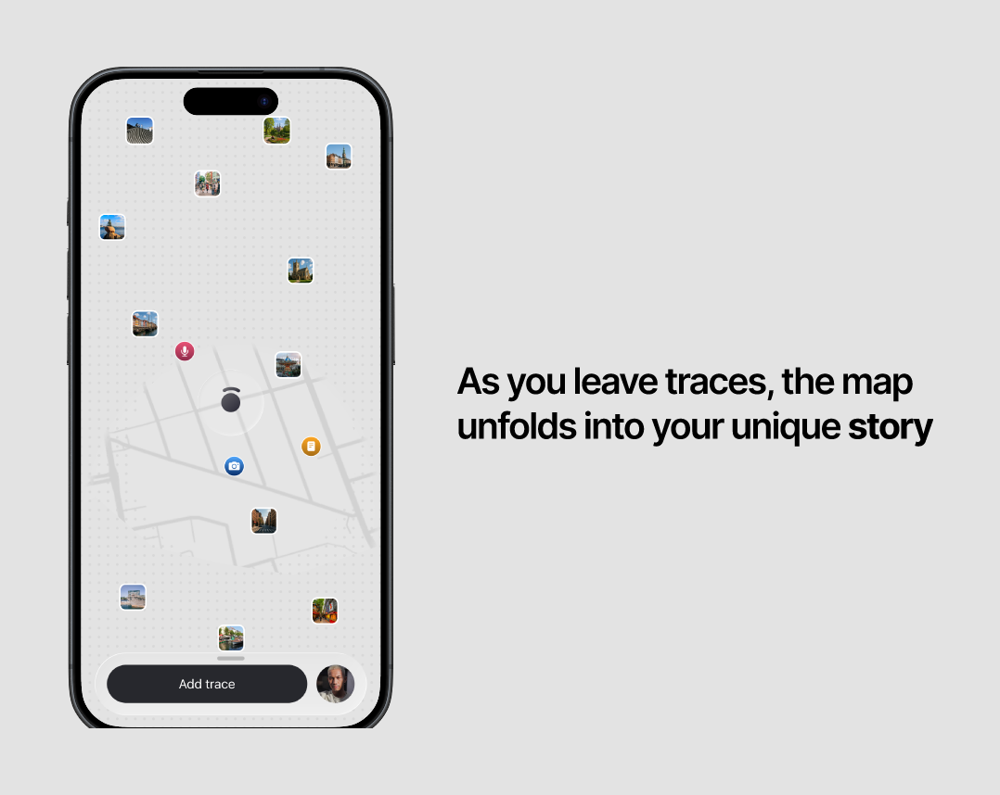
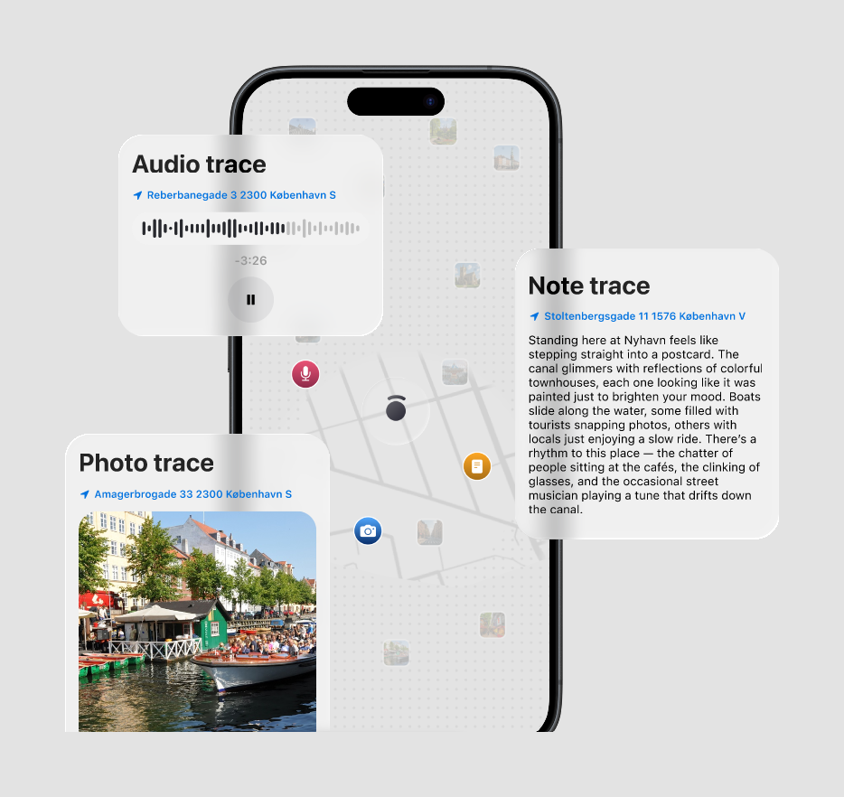
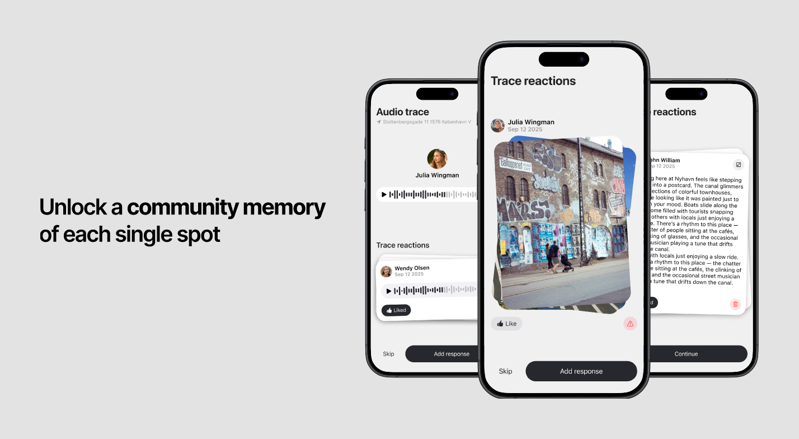
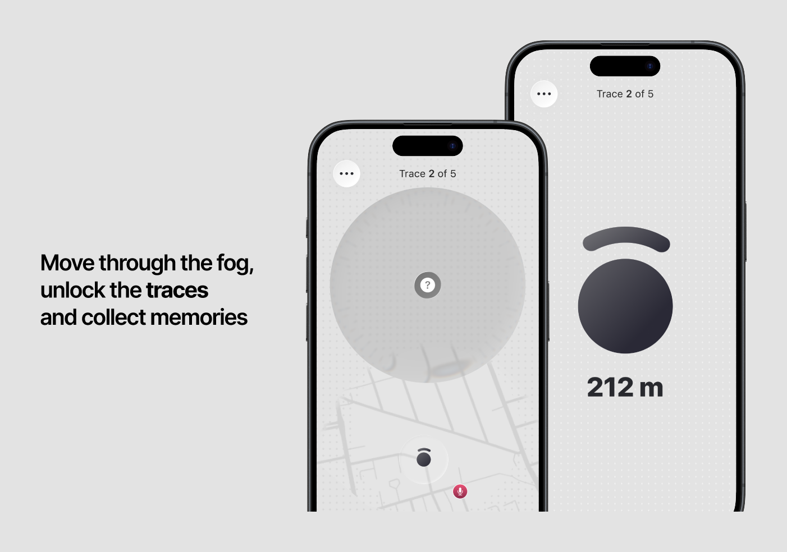
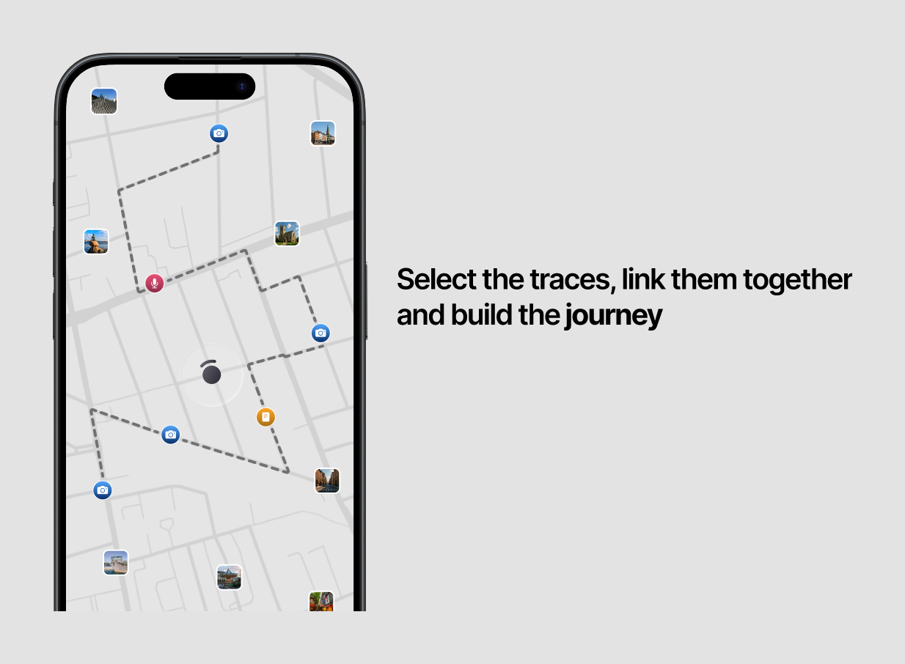

Leave a trace.
Build your story.
Jurnit turns every street into a living map of memories — drop notes, photos and audio where they happened, then link the moments into journeys worth walking.
0 explorers already on the list





Be among the first
to leave a trace
Join the waitlist and we'll hand you early access the moment Jurnit reaches your city.
No spam. One email when it's your turn.